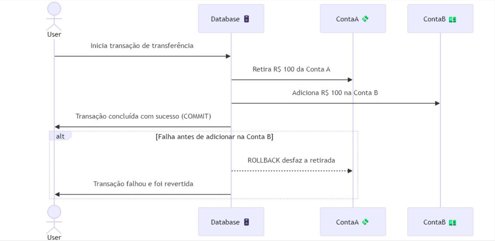

Disciplinas
LABORATÓRIO DE BANCO DE DADOS. Concluído
Materiais
[UFMS Digital] Laboratório de Banco de Dados - Módulo 3 - Unidade 1 sendProf.ª ministrante: Esteice Janaina Santos Batista.
O que é uma transação?
Uma transação em um banco de dados pode ser entendida como um "pacote" de operações que devem ser executadas juntas.
- Banco de dados de uma conta bancária:
- Transferência de dinheiro:
- Tirar dinheiro de uma conta.
- Colocar o dinheiro em outra conta.
- A ideia principal de uma transação é que tudo que faz parte dela deve acontecer de uma vez só, ou nada deve acontecer.
- Isso é importante para garantir que o banco de dados não fique com informações incompletas ou incorretas.
- A transação garante que, se houver qualquer falha, o banco de dados volta ao estado anterior, como se a transação nunca tivesse acontecido.
Como uma transação funciona.
- BEGIN: Marca o início da transação. A partir desse ponto, o banco de dados começa a registrar todas as operações.
- COMMIT: Finaliza a transação e "salva" todas as alterações feitas. Isso significa que todas as ações dentro da transação são confirmadas e não podem ser desfeitas.
- ROLLBACK: Cancela a transação e desfaz todas as operações feitas desde o BEGIN. Se algo der errado no meio do caminho, o ROLLBACK garante que o banco de dados volte ao estado em que estava antes da transação começar.
Exemplo prático:

-- Inicia
BEGIN;
-- Subtrai
UPDATE contas
SET saldo = sado -100
WHERE conta_id = 'A';
-- Adiciona
UPDATE contas
SET saldo = saldo + 100
WHERE conta_id = 'B';
-- Verica a transação
COMMIT;
ROLLBACK.
- Se uma falha ocorrer dentro de uma transação (por exemplo, um erro de sintaxe ou violação de integridade), o PostgreSQL entra automaticamente em um estado de erro.
- Nesse estado, você não pode continuar fazendo novas operações até que resolva o erro.
- Para lidar com o erro, você deve explicitamente executar o comando ROLLBACK para desfazer todas as alterações feitas na transação até aquele ponto.
DO $$
BEGIN
-- Inicia
BEGIN;
-- Faz a operação
UPDATE contas SET saldo = sado - 100 WHERE conta_id = 'A';
-- Se tudo ocorrer bem
COMMIT;
EXCEPTION
-- Caso dê erro, realiza o Rollback
WHEN OTHERS THEN
ROLLBACK;
RAISE NOTICE 'Transação revertida devido a erros.';
END;
$$
ACID: propriedades das transações.
Propriedades que garantem a integridade das transações no banco de dados:
- Atomicidade
- Consistência
- Isolamento
- Durabilidade
A atomicidade garante que todas as operações de uma transação sejam concluídas com sucesso ou, em caso de falha, nenhuma delas será aplicada. É o conceito de "tudo ou nada".
- Exemplo: Em uma transação bancária, o débito de uma conta e o crédito de outra devem ocorrer juntos ou nenhum deles deve acontecer.
A consistência garante que qualquer transação leve o banco de dados de um estado consistente a outro estado igualmente consistente, ou seja, todas as regras de integridade e as restrições definidas no banco de dados devem ser respeitadas durante e após a execução de uma transação.
Se uma transação violar qualquer regra de integridade (como tentar inserir dados incorretos ou não conformes), ela falhará e será revertida, mantendo a consistência do banco de dados.
- Imagine que você tenha duas tabelas: alunos e cursos, onde curso_id na tabela alunos é uma chave estrangeira que deve existir na tabela cursos. A consistência garante que você não possa inserir um aluno em um curso que não existe.
O isolamento garante que as operações de uma transação não sejam visíveis para outras transações até que ela seja concluída, impedindo a interferência entre transações simultâneas.
- Exemplo: Duas pessoas tentando modificar o saldo de uma conta ao mesmo tempo. O isolamento garante que uma transação não interfira na outra. As duas transações são isoladas, ou seja, a segunda transação (T2) não verá a alteração feita pela primeira (T1) até que essa seja confirmada (COMMIT).
O PostgreSQL gerencia a consistência e o isolamento de transações usando diferentes níveis de isolamento que controlam a visibilidade das transações em andamento.
No PostgreSQL, existem dois níveis principais de isolamento, definidos pelo padrão SQL, que garantem diferentes graus de consistência durante a execução de transações: SERIALIZABLE ou READ COMMITTED.
Read Committed (Leitura Confirmada):É o nível padrão de isolamento no PostgreSQL. Nesse nível, uma transação só pode ver as alterações que foram confirmadas (comitadas) por outras transações. Isso significa que ela não vê dados intermediários ou não confirmados.
Problema: ainda pode ocorrer uma não repetibilidade de leitura (ou seja, os dados podem mudar entre duas leituras dentro da mesma transação).
-- Inicia
BEGIN;
-- Primeira leitura de um saldo da conta
SELECT saldo FROM contas WHERE id = 1;
-- Outra transação pode modificar o saldo antes da próxima leitura
-- Segunda leitura
SELECT saldo FROM contas WHERE id = 1;
COMMIT;
-- Saldo lido pode mudar entre a primenira e a segunda leitura,
-- se uma outra transação modificar o saldo entre essas leituras.
Serializable (Serializável):
Este é o nível mais alto de isolamento. Ele simula a execução serial de transações, como se elas fossem executadas uma após a outra, sem interferência entre si. Nenhuma transação pode interferir no resultado de outra.
Problema resolvido: Impede leituras sujas, não repetibilidade de leitura e fantasmas, garantindo que as transações sejam completamente isoladas.
-- Inicia
BEGIN;
-- A transação irá bloquear outras até que termine
SELECT saldo FROM contas WHERE id = 1;
-- Nenhuma outra transação pode interferir
SELECT saldo FROM contas WHERE id = 1;
COMMIT;
-- Se uma outra transação tentar modificar o saldo ou inserir
-- um novo registro durante a execução, ela será bloqueada
-- até que esta transação termine.
Alterar nível de isolamento:
No PostgreSQL, você pode alterar o nível de isolamento de uma transação usando o comando SET TRANSACTION ISOLATION LEVEL.
-- Inicia
BEGIN;
SET TRANSACTION ISOLATION LEVEL SERIALIZABLE;
-- Comandos SQL aqui..
COMMIT;
Durabilidade (D)
A durabilidade garante que, após uma transação ser confirmada (COMMIT), suas mudanças no banco de dados persistem, mesmo que ocorra uma falha de sistema.
- Exemplo: transação de atualização no saldo de uma conta. Após o COMMIT, a alteração será persistida no disco, mesmo que o sistema falhe logo após.
- Atomicidade: Todas as operações de uma transação são aplicadas ou nenhuma delas é aplicada. SQL: ROLLBACK ou COMMIT.
- Consistência: A transação mantém o banco de dados em um estado consistente. SQL: Restrições como FOREIGN KEY, CHECK.
- Isolamento: Transações são isoladas para não interferirem entre si. SQL: Níveis de isolamento, como SERIALIZABLE ou READ COMMITTED.
- Durabilidade: As alterações feitas por uma transação confirmada são permanentes. SQL: O COMMIT garante que as mudanças sejam salvas.
Transações implícitas e explícitas.
Transações explícitas:É quando ocorre um erro em uma transação no PostgreSQL, o sistema entra em um estado de "erro de transação" ou "modo de falha". Nenhuma outra operação poderá ser executada até que a transação seja revertida completamente com um comando ROLLBACK.
-- Inicia
BEGIN;
-- Tenta inserir um valor inválido
INSERT INTO contas (id, saldo) VALUES (1, texto_invalido);
-- Aqui ocorre o erro, o PostgreSQL entra em modo de erro
SELECT * FROM contas; -- Isso resultará em erro até que um Rollback seja executado
ROLLBACK; -- Reverte todas as operações desde o início da transação
Por padrão, o PostgreSQL opera no que é chamado de "modo de transação implícita", onde cada comando SQL é tratado como uma transação individual. Após a execução de um comando SQL (como um INSERT ou UPDATE), o PostgreSQL automaticamente faz um COMMIT, ou seja, aplica as alterações ao banco de dados.
INSERT INTO contas (id, saldo) VALUES (1, 100);
-- O PostgreSQL faz o COMMIT automaticamente após
-- este comando, então o valor é salvo imediatamente.
Savepoints e controle de transações aninhadas.
Transações aninhadas são aquelas que contêm outras transações dentro de si.
Em sistemas que suportam esse recurso, cada transação interna pode ser confirmada ou revertida independentemente, sem afetar as outras transações internas ou a transação "pai".
No entanto, no PostgreSQL, o conceito de transações aninhadas é implementado de forma simplificada com o uso de savepoints.
Os savepoints são pontos de controle intermediários dentro de uma transação.
Eles permitem que você defina marcos durante o processo de execução de uma transação e, se algo der errado depois de um determinado ponto, você pode voltar apenas até esse ponto, sem a necessidade de reverter todas as operações feitas desde o início da transação.
-- Criar um Savepoint
SAVEPOINT savepoint_name;
-- Reverter até um Savepoint
ROLLBACK savepoint_nome;
-- Libera um Savepoint da memória (opcional)
RELEASE SAVEPOINT savepoint_name;
Exemplo completo:
-- Inicia
BEGIN;
-- Operação 1: Inserir um novo aluno
INSERT INTO alunos (nome, curso) VALUES ('João', 'Engenheiro');
-- Define um Savepoint chamado ponto_a
SAVEPOINT ponto_a;
-- Operação 2: Inserir um segundo aluno
INSERT INTO alunos (nome, curso) VALUES ('Maria', 'Arquitetura');
-- Define um outro Savepoint chamado ponto_b
SAVEPOINT ponto_b;
-- Operação 3: Inserir um terceiro aluno (causará um erro)
INSERT INTO alunos (nome, curso) VALUES ('Pedro', NULL); -- Falha (curso não pode ser NULL)
-- Reverter até o ponto_b (o erro será ignorado, e as operações anteriores serão mantidas)
ROLLBACK TO ponto_b;
-- Continuação: Inserir um novo aluno após o Rollback parcial
INSERT INTO alunos (nome, curso) VALUES ('Ana', 'Design');
-- Finaliza a transação com sucesso
COMMIT;
Praticando.
Cria o db 'Banco' e crias as tabelas 'clientes e contas'.
-- Cria a tabela clientes
CREATE TABLE clientes (
cliente_id SERIAL PRIMARY KEY,
nome VARCHAR(100) NOT NULL,
email VARCHAR(100) NOT NULL UNIQUE
);
-- Cria a tabela contas
CREATE TABLE contas (
conta_id SERIAL PRIMARY KEY,
cliente_id INT REFERENCES clientes(cliente_id),
saldo DECIMAL(10, 2) DEFAULT 0.00
);
Inserção de dois clientes.
-- Inicia a transação
BEGIN;
-- Insere um cliente
INSERT INTO clientes (nome, email) VALUES ('Pedro Gomes', 'pedro.gomes@email.com');
-- Insere uma conta para o cliente criado
INSERT INTO contas (cliente_id, saldo) VALUES (currval('clientes_cliente_id_seq'), 100.00);
-- Salva as alterações no db
COMMIT;
-- Inicia a transação
BEGIN;
-- Insere um cliente
INSERT INTO clientes (nome, email) VALUES ('Ana Silva', 'ana.silva@email.com');
-- Insere uma conta para o cliente criado
INSERT INTO contas (cliente_id, saldo) VALUES (currval('clientes_cliente_id_seq'), 44.00);
-- Salva as alterações no db
COMMIT;
Pesquisa por clientes.
SELECT * FROM clientes;
-- Saída
1 "Pedro Gomes" "pedro.gomes@email.com"
2 "Ana Silva" "ana.silva@email.com"
Pesquisa por contas.
SELECT * FROM contas;
-- Saída
1 1 100.00
2 2 44.00
Inserindo clientes com restrição (para causar um erro).
-- Inicia a transação
BEGIN;
-- Insere um cliente
INSERT INTO clientes (nome, email) VALUES ('Pedro Santos', 'pedro.santos@email.com');
-- Insere o mesmo cliente, o que causará um erro
INSERT INTO clientes (nome, email) VALUES ('Pedro Santos', 'pedro.santos@email.com');
-- Se o erro ocorrer, as operações anteriores serão desfeitas com o ROLLBACK
ROLLBACK;
-- Saída
ERROR: duplicate key value violates unique constraint "clientes_email_key"
Após o erro o Rollback bloqueia i sistema até que o erro seja resolvido.
ERROR: current transaction is aborted, commands ignored until end of transaction block